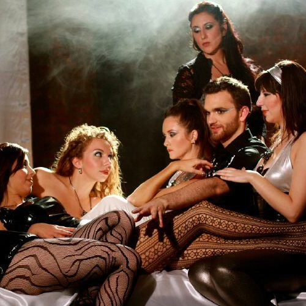

Stereotype Threat: A Direct Attack
Faggot… Gay… Queer… These were the names that I was called on a daily basis at school. I’m sure that you have all heard the phrase “sticks and stones may break my bones but words will never hurt me”. But words do hurt, they hit you at the very core; we pretend and lie to ourselves to be accepted, we walk the tightrope of conformism to please the crowd below. I didn’t realize it when I was a kid but I was being stereotyped, being put in a box and checked off… I was twelve years old and had no clue that I was gay… honestly, not a clue. I wasn’t attracted to anyone; and for the most part I just wanted to be left alone.
I grew up in an environment where we had less than most, due to my parents divorcing at the age of 12 and my father basically disappeared to his new family. To put it simply we struggled to survive, it was probably the hardest two years of my life… I was short, fat, extremely depressed, and yes unbeknownst to me at the time gay. I wanted so badly to be normal, to just fit in with everyone else, to live my life as carefree as my peers did.
My home life clearly difficult, school was supposed to be an escape, a refuge from all the pain that I faced. It wasn’t though, how could I concentrate on math, when the kids would write hateful words all over my desk, or ask me why I acted like a girl, or follow me home after school and throw rocks at me, once one of my classmates lit a firecracker and threw at my face, exploding next to my ear and causing hearing loss. My mother pleaded with the administration at the school for them to step in, their response was simply “Children can be cruel…” I spent almost every lunch in the counselor’s office, hiding, hoping no one would notice me. I failed almost every class I took. I believed what everyone told me… that I would never become anything.
Thank god for my mother! She had the wisdom to put my two brothers and me in therapy ASAP. Every week I would go and talk to this nice man named Ray. He would ask me all kinds of questions and I would answer them, he did what I thought was impossible, he helped me to believe in myself. He taught me what these kids were doing was wrong; they were judging me based on something that was uncontrollable. Saying that since I didn’t fit into the social norm somehow I was less than, beneath them. Ray encouraged me to do things that I liked regardless of what others thought, to empower myself.
At school I joined chorus and began singing, this is where I found my happiness. Music brought me a sense of peace and harmony. When I was singing I was whole again, music taught me how to feel.
By the time I got to high school I was winning awards right and left for my vocal abilities, and when it came time to apply to college, I received a full scholarship to the University of Hartford making me the first in my family to attend and graduate College.
It may not happen every day but stereotype threat is alive and well, and something that we should strive to eliminate as often as possible. Schools, workplaces, homes, everywhere really, we should be teaching tolerance, that everybody has talents. Parents should be showing their children and teachers should be teaching their classes that we are all equal, and in that same right we’re all capable of greatness. That trying to pull other people down is just a sign of weakness and fear. And if we discard that fear we will become stronger.
If there’s something that the world is teaching us today it’s that all barriers can be broken. All people deserve the same fighting chance to become whatever they want and reach their true potential. Life is about lifting each other up and pushing boundaries. Never let anybody tell you, you can’t, or you’ll never be. Believe in yourself and trust in your talents.
Still Shot From Night at the Opera
Night at the Opera Video Shoot